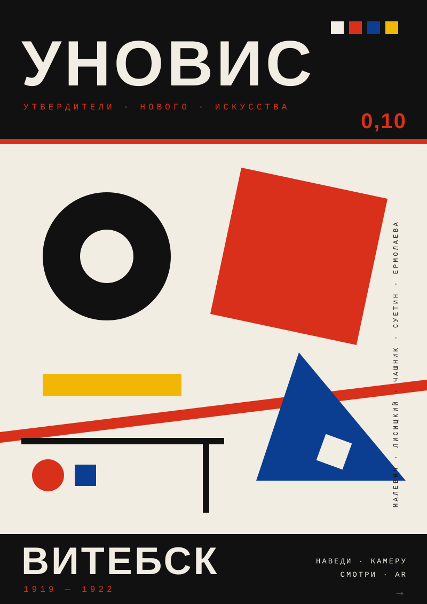

В 1919 году в Витебске Казимир Малевич и его ученики — Лисицкий, Чашник, Суетин, Ермолаева — объединились в группу УНОВИС. Они превратили город в первую в мире «супрематическую лабораторию»: расписывали трамваи, вывески, здания.
Этот проект — переосмысление УНОВИСа в 2026 году. Плакат в духе 1920-х + AR-слой, который оживляет супрематические формы через камеру телефона.
Этот проект — переосмысление УНОВИСа в 2026 году. Плакат в духе 1920-х + AR-слой, который оживляет супрематические формы через камеру телефона.
Как это работает
01
Напечатай плакат
Скачай SVG, распечатай на А4/А3 или наклей на стене Витебска.
02
Открой AR на телефоне
Отсканируй QR-код ниже или перейди по ссылке в Safari / Chrome.
03
Наведи камеру на плакат
Плакат оживает: красный квадрат парит, чёрный круг вращается, появляется надпись УНОВИС.
{kind=link}
QR · НА · AR
СКАНИРУЙ · ТЕЛЕФОНОМ
Плакат

Что дальше
Этот плакат — только начало. Можно напечатать серию разных плакатов с маршрутом по ключевым местам Витебска (Народное художественное училище, дом Шагала, Замковая ул.) — и каждый будет оживать своим уникальным AR-слоем. Получится супрематический квест по городу.